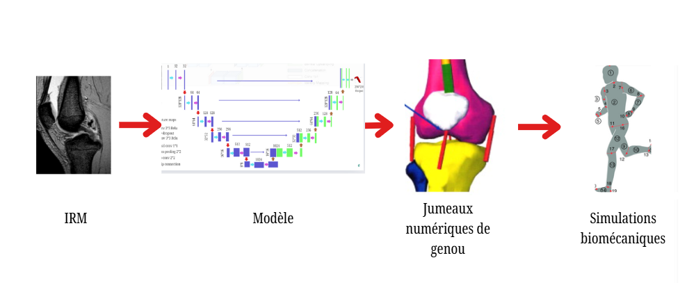
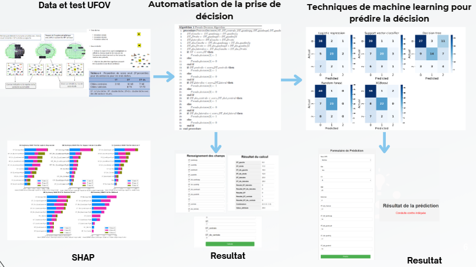

ElpiSur est une initiative humanitaire dédiée à fournir un soutien complet aux personnes déplacées par des conflits, en facilitant leur relocalisation et leur intégration dans des environnements sûrs. Le projet offre des services tels que le transport vers des zones sécurisées, l'hébergement temporaire, une assistance juridique pour les démarches administratives, et un accompagnement à l'emploi pour aider les bénéficiaires à reconstruire leur vie dans la dignité.
Pour renforcer l'efficacité de ses interventions, ElpiSur intègre des approches de data science et utilise des tableaux de bord interactifs. Ces outils permettent de collecter, analyser et visualiser des données essentielles, facilitant ainsi la prise de décisions éclairées et l'optimisation des ressources.

Un jumeau numérique est une réplique virtuelle d’un patient, d’un organe, ou d’un système biologique, créée à partir de données réelles provenant de l’imagerie médicale, notamment l’IRM.
Notre étude se concentre sur la segmentation automatique des tissus mous du genou using des techniques d’apprentissage profond (deep learning) pour traiter les images IRM.
Nous extrayons des mesures géométriques précises à l’aide de formules et équations numériques spécifiques et estimons le T2 mapping via la technique multi-écho.
Nous avons validé notre méthode sur des images de la colonne vertébrale du CLIMAL et évalué la qualité de la segmentation avec l’indice de Sørensen-Dice.
Cette approche combine l’imagerie médicale avancée et l’apprentissage profond pour améliorer la précision et la personnalisation dans la médecine et le sport, de prévenir les blessures, d’évaluer les performances des athlètes et d’optimiser les traitements et les entraînements.

Dans un premier temps, nous avons automatisé le raisonnement humain d’un neuropsychologue en nous basant sur les normes établies dans l'article "Principes de réalisation du champ visuel attentionnel et élaboration de normes".
Nous avons développé un algorithme basé sur le score seuil défini dans cet article. Cet algorithme a été intégré dans une application capable de reproduire précisément le travail de la neuropsychologue, sans recours à l'intelligence artificielle, mais uniquement sur la base des scores normatifs.
Ensuite, nous avons enrichi le projet en utilisant des techniques d'intelligence artificielle pour développer un système d'aide à la décision. Ce système évalue l'aptitude des patients présentant des déficits du champ visuel à reprendre la conduite automobile.
En intégrant des données de périmétrie visuelle et des champs visuels attentionnels (UFOV), nous avons créé et évalué des modèles d'apprentissage automatique tels que la régression logistique, les forêts aléatoires et XGBoost. Ces modèles gèrent efficacement les problèmes de classification déséquilibrée et offrent des décisions explicables grâce à l'utilisation des valeurs SHAP.
L’ensemble de ces travaux a permis de développer une application complète, assistée par l’IA, pour faciliter les évaluations des professionnels de santé et contribuer à la sécurité routière.